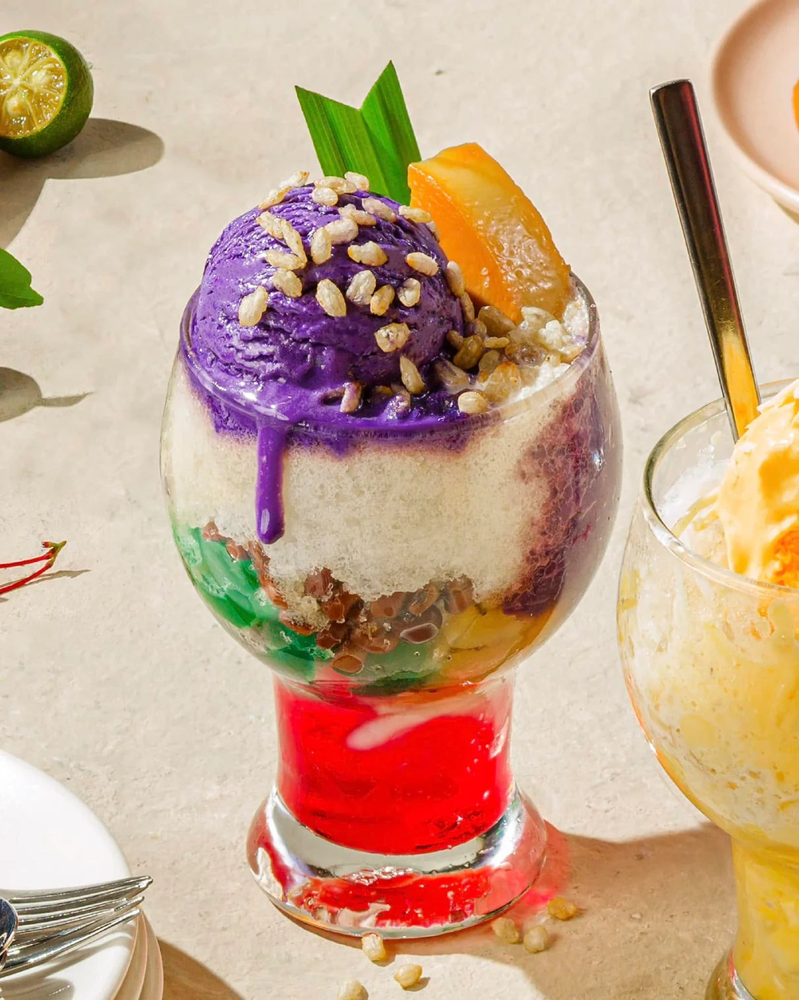
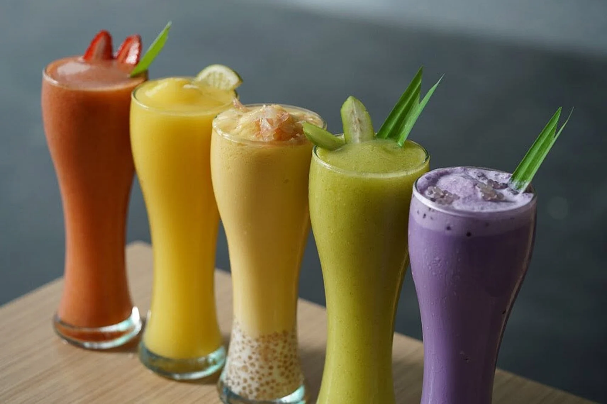
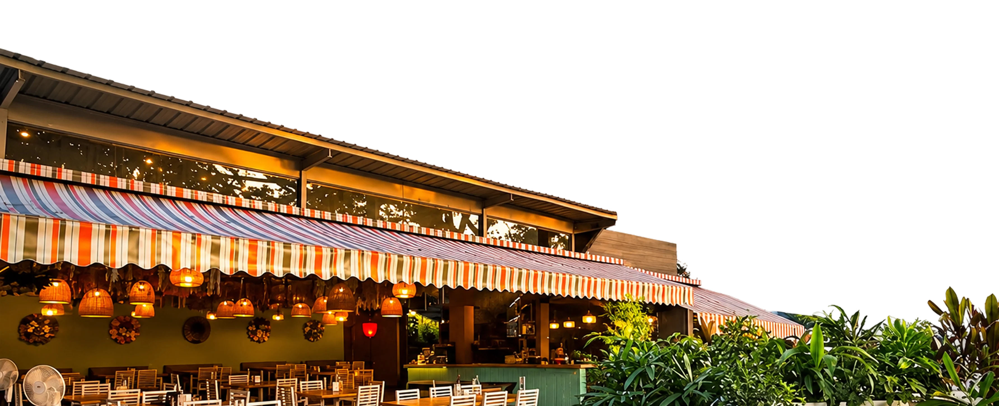
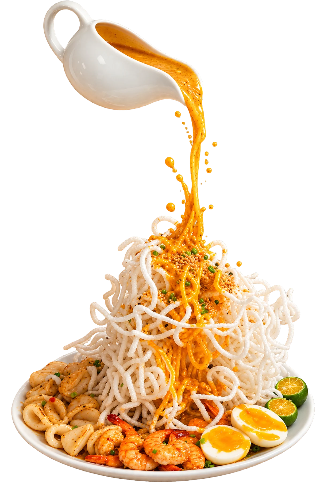
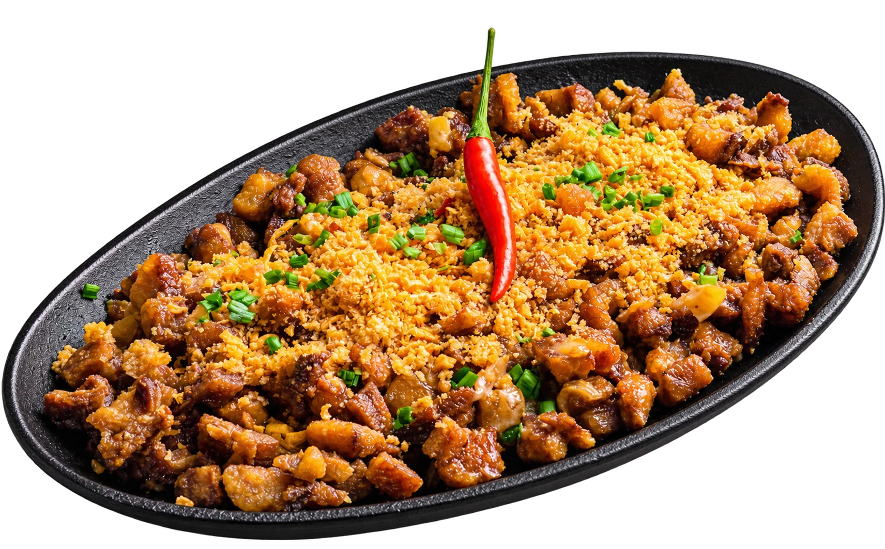
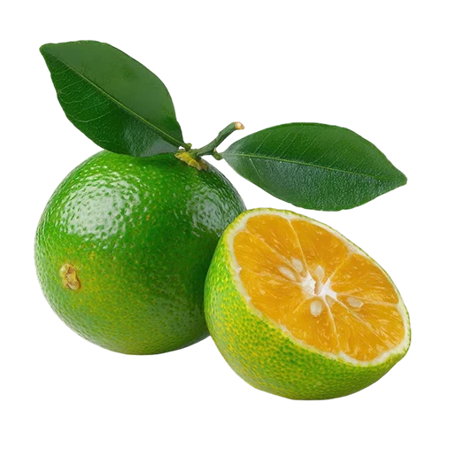
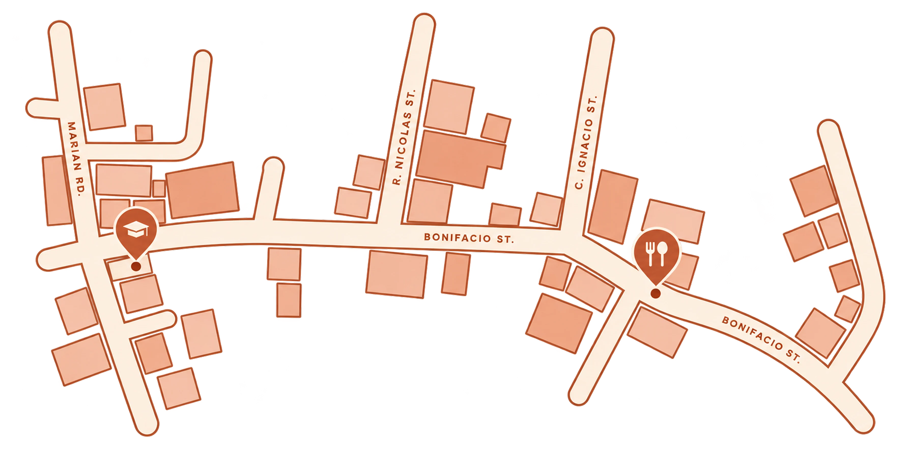

Kusina. Where every taste feels like home.

Main Dishes

Desserts

Drinks

Appetizers
A little
taste of
At Kusina, we believe that every dish tells a story of home, family, and tradition. Inspired by the rich flavors of Filipino cuisine, we bring together the comfort of home-cooked meals and the warmth of Filipino hospitality.
Food has always been an important part of Filipino culture. It brings families together, strengthens friendships, and creates memories worth sharing. From everyday favorites to beloved classics, Kusina celebrates the flavors that remind us of home.
Our Goal
To share the joy of Filipino food through quality, comforting flavors and a modern, welcoming experience. Whether you’re discovering Filipino cuisine or craving something familiar, Kusina brings the taste of home closer to you.
Where Every Taste Feels Like Home

Crispy

A creative take on classic Pancit Palabok featuring crispy noodles topped with
a rich savory shrimp crunchy garnishes, and traditional Filipino flavors.
Sizzling


A creative twist on classic Filipino Sisig, featuring
flavorful seasoned pork wrapped in crispy golden
pouches. Crunchy on the outside and savory on the
inside, perfect for sharing.
Get in
Questions, stories, or just want to say hello?
Our kitchen door is always open.
-
Email uskusina.contact@kusina.ph
-
Contact us+63 905 9018 4827
